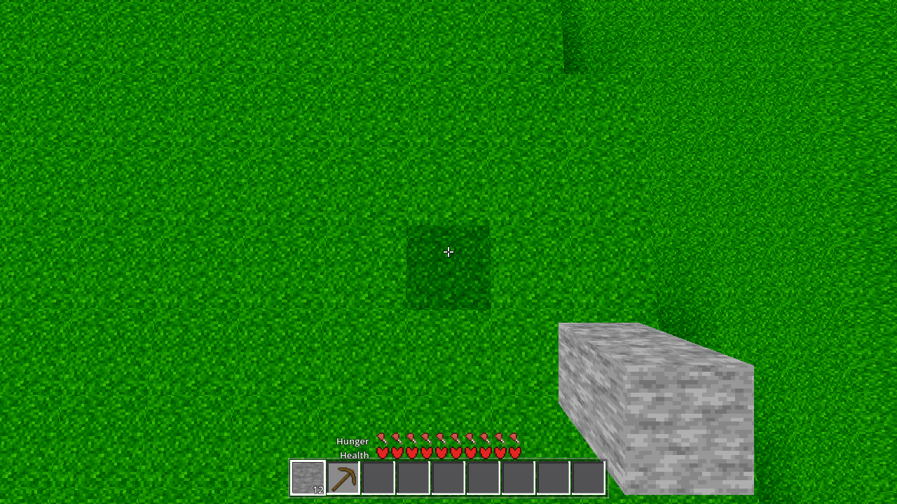
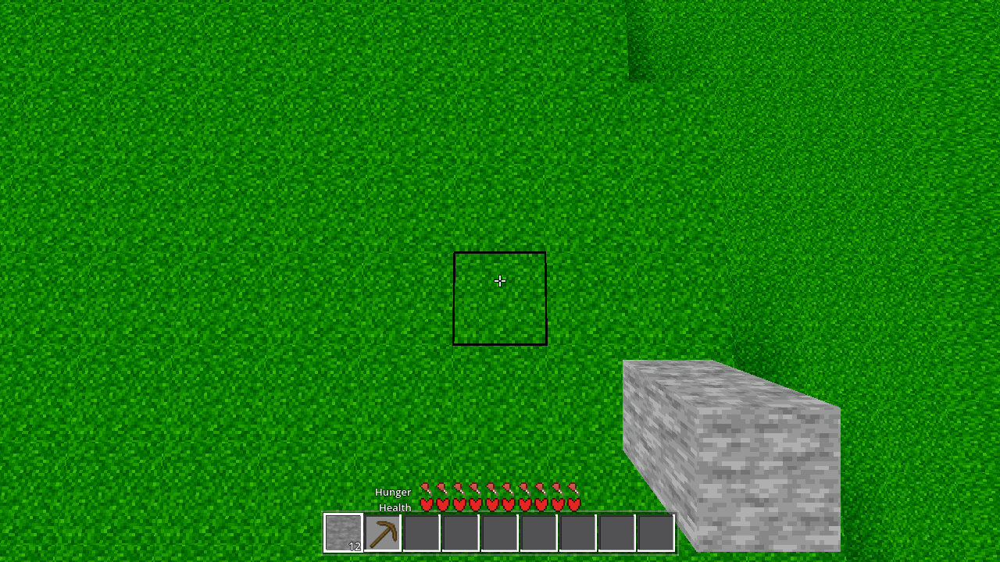
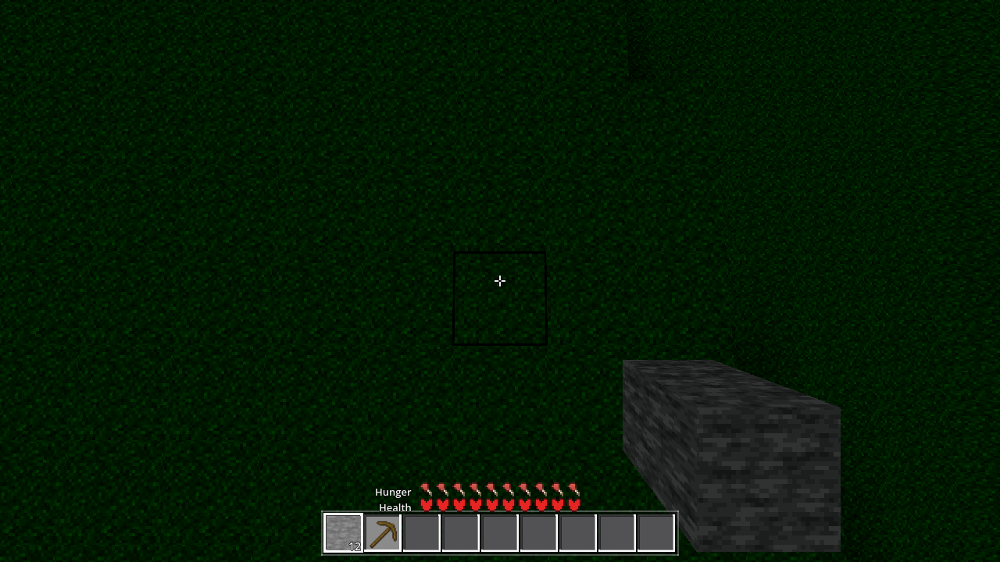

Verdict: the dark square was never a lighting fault. It is the DDA aim
highlight (the target indicator, player.gd _build_highlight) — a 1.02 m
BoxMesh filled 28% black — drawn over the spawn cell while the r24
assessment camera looks straight down. Shipped fix: the indicator is now a black
wireframe edge outline (no filled face), behind Settings "aim_wire"
(default ON) + AWECRAFT_AIMWIRE=0|1 + an options-menu row. All light
gates pass; the tree is pristine (temporary probe removed and re-gated).
Nothing in the lighting. The ticket's premise (a lighting value shared across 16 m, chunk-boundary granularity) is falsified by measurement:
Projection proof (the decisive measurement): the r24 frame was shot in fly mode,
where the player camera's live FOV is 98.99° — player.tscn base 90° × the 1.10
fly boost (the 75° figure in main.gd _make_camera is a different camera).
With the live transform (pos 8.787, 143.602, 8.787; fwd −0.002, −0.997, −0.073; FOV
98.99; aspect 1280/720), the highlight's top face projects to px (578, 321)–(701, 443);
the observed dark square edges are (580, 320)–(703, 442) — within ±2 px on all four
sides. The "16 m" reading was a scale misjudgement of a 1 m UI element; "the same
problem remains inside chunks" is consistent — it is one cell mid-chunk by
construction. The scene-graph census (temporary probe, reproducing the r24 AIM state)
reports the highlight visible=true at world [8.78, 140.48, 8.78].
| file | change |
|---|---|
| godot/autoload/settings.gd | New key "aim_wire": true (default ON) with the ticket comment. |
| godot/player/player.gd | The indicator is a MultiMeshInstance3D in both states. ON: a hollow
12-strip edge frame (unit-cube MultiMesh, 8 face-edge strips 1.02×0.02×0.02 + 4 corner
pillars 0.02×1.02×0.02), unshaded opaque black — no filled faces, so the aimed face
keeps its terrain lighting. OFF: 1 instance at the 1.02 scale with the exact
pre-fix Color(0,0,0,0.28) alpha fill (bit-for-bit the old box). Apply-on-change
in _update_interaction (rebuilt only on a flip, the viewmodel_occlude pattern);
env preload AWECRAFT_AIMWIRE=0|1 in _ready (written to Settings without
save, the AWECRAFT_VMOCC pattern). |
| godot/ui/menu.gd | Options-page row "Target mark: outline (no dimming fill)" + toggle handler + stored-value sync. |
Default ruling: the look the user reported IS the defect (AC-0384 §29.3 item 4
called the square a rendering fault), so the fix ships in and OFF is the A/B — the same
ruling as ambient_sky (AC-0426), cloud_gate (AC-0428), no_sky_floor (AC-0429),
moonlight (AC-0436), stat_captions/inventory_dim (AC-0437).
AWECRAFT_AIMWIRE=0 restores the pre-fix look for A/B or preference.
Why real geometry, not a wireframe material flag: measured on this dev pipeline,
StandardMaterial3D.wireframe = true is ignored — a 1.02³ box with the flag
rendered as a solid fill (first after-capture: pitch-black square, luma 0 across the
interior; red A/B ac0440-exp-red.png in .scratch/AC-0440/: interior (255,0,0)
everywhere, no lines). Since the product ships on Windows, the outline is real geometry
so it renders identically on any rasterizer.
r24 recipe re-taken on this tree: AWECRAFT_SIZE=1280,720 AWECRAFT_RADIUS=24
AWECRAFT_FOG_PCT=83 AWECRAFT_SEED=44 AWECRAFT_TIME_FREEZE=1 AWECRAFT_CLOUD_T0=411200
AWECRAFT_AIM="8.5,143.62,8.5,0,-1.5" AWECRAFT_SNAP_DRAIN=600 AWECRAFT_SNAP_STEPS=300,
xvfb + llvmpipe Forward+, one hour per state. "band" = the grass frame around the
square (x 420–900, y 200–600, excluding the square); "interior" = the square minus a
6-px border. All luma = 8-bit grayscale of the rendered frame.
| hour | band before | band after | interior before | interior after | ratio before (in/band) | ratio after (in/band) |
|---|---|---|---|---|---|---|
| T=0.5 (noon, the r24 hour) | 82.2 | 82.2 | 59.8 | 79.3 | 0.727 (the dark patch) | 0.965 (grass) |
| T=0.25 (morning) | 15.5 | 15.5 | 9.3 | 15.3 | 0.600 (the dark patch) | 0.986 (grass) |
Transect across the left/right boundary at y=381 (T=0.5): before — a broad step from ~82 (grass) down to ~52–60 across a 120-px-wide interior; after — grass values (52–102 texture dither) everywhere except a 2-px black line at x=580–581 and x=698–699 (the wireframe edges; the vertical profile shows the same 2-px lines at y≈320 and y≈440). The fence "do not smooth/blur the boundary" is met trivially: there is no boundary to blur — the patch was a UI fill, and the only edge now is the indicator's own 2-px outline.



The extended temporary probe corner-paired the highest-y top-face vertex colours
across the 3×3 block's 12 internal chunk-boundary seams (180 pairs measured, 145
same-height level twins, 135 exact within 1e-4, max level step 0.9216). The AC-0427
probe was removed in that ticket, and the mesh carries no vertex exactly on the
nominal seam line (the seam-V edge quads overhang the seam — corners at local
16.61/−0.61, each side), so the absolute count is not directly comparable to their
190/191; the holding check is the A/B: the same measurement on the pre-fix tree
(the 3 fix files stashed for the run) is byte-identical
(.scratch/AC-0440/twin-before.json == twin-after.json, 0 row diffs), and the
final-tree run (after the MultiMesh rework) reproduces it exactly. Zero mesh-path diff
+ genhash 25/25 + meshprobe 1.0 — the AC-0427 twin result holds by construction and
by measurement.
The second hour (T=0.25) plus the full-frame collateral diff: in BOTH hours the before/after pixel difference (>3 luma, sampled) is confined to bbox (580, 322)–(700, 442) — exactly the indicator's footprint — with nothing else in the 1280×720 frame moving (ground, clouds, sky, viewmodel, HUD). The band luma is unchanged (82.2/82.2, 15.5/15.5): the change touched nothing outside the target mark.
| gate | command | exit | result | log |
|---|---|---|---|---|
| G0 | --headless --path godot --quit | 0 | SCRIPT ERROR 0, SHADER ERROR 0 (gate_census ok) | .scratch/AC-0440/g0-pristine.log |
| SMOKE | AWECRAFT_BATTERY="player;interact;light;fluids;genhash" --headless | 0 | battery ok:true; 0 errors; 25/25 GENHASH lines; interact arm highlight_visible=true | .scratch/AC-0440/smoke-pristine.log |
| PROBE | AWECRAFT_LOGIC=meshprobe --headless | 0 | ok:true, ac0211_ok:true | .scratch/AC-0440/meshprobe-pristine.log |
| shaderforce | — | — | not owed: no .gdshader changed (stated, skipped) | — |
Render runs (not a gate): 4× rc=0, log carries Forward+/llvmpipe, 0 errors,
SNAP line + file present for each (capture CHECK lines in
.scratch/AC-0440/capture-run.log; per-run logs
.scratch/AC-0440/render-*.log). Stochastic-UAF check: every godot call checked for
exit status; no clean-log signal-11 hits. Pristine contract: the ac0440probe arm +
function removed — git diff of harness.gd is empty (byte-identical to HEAD)
and G0/SMOKE/PROBE re-ran green after removal (the "-pristine" logs above).
Captures in tasks/AC-0440/captures/ (4 frames above). Provenance: rendered on
the final tree (HEAD cacf99f + the 3 fix files; 39 commits past the r24 baseline
56c9095, whose frame
tasks/AC-0384/ac0384-r24-ground-down-day.png remains the assessment reference) —
the AIMWIRE=0 re-take is the "before" on this tree; the AIMWIRE=1 frame is the
default look. Dev pipeline = llvmpipe proxy (evidence about geometry/layout, per
HARNESS.md §2).
StandardMaterial3D.wireframe is ignored on this dev pipeline
(Forward+/llvmpipe, Godot 4.7.1 build): a box with the flag renders as a solid fill.
Measure outline geometry, don't flag it, if the look must be verified on this box.MultiMesh.mesh (not base_mesh), instance_count (not
transform_count), and the material rides the base mesh (MultiMesh has no
material property; the particles pool does exactly this —
godot/entities/particle_pool.gd). get_instance_transform() read-back
returns the identity even after set_instance_transform(); the write path
renders correctly — don't trust the read-back for diagnostics._make_camera — a different camera.)Logs: .scratch/AC-0440/ (g0-*, smoke-*, meshprobe-*, probe-*, render-*,
twin-{before,after}.json, profile.py, capture.sh, mmtest.gd). Analysis scripts and
pixel forensics are in the same folder; the r24 reference frame is
tasks/AC-0384/ac0384-r24-ground-down-day.png.